This section documents what I did when developing the fully kinetic ions and drift-kinetic electrons module in GEM code which uses field-line-folloiwng coordinates. In field-line-following coordinates (ψ,𝜃,α), the equation of guiding-center drift is written as
|
| (13) |
|
| (14) |
|
| (15) |
where α is the generalized toroidal angle defined by (refer to my notes on tokamak equilibrium) α = ϕ−δ
with δ = ∫
0𝜃 d𝜃 and
d𝜃 and  = B ⋅∇ϕ∕(B ⋅∇𝜃), which is the local safety factor. Using the expression of vd
given by Eq. (9), the right-hand-sides of Eqs. (13)-(15) to can be written as (presently dropping the E×B
drift):
= B ⋅∇ϕ∕(B ⋅∇𝜃), which is the local safety factor. Using the expression of vd
given by Eq. (9), the right-hand-sides of Eqs. (13)-(15) to can be written as (presently dropping the E×B
drift):
|
| (19) |
For a general tokamak magnetic configuration specifed numerically, all the above 2D equilibrium quantitis are computed by interpolating pre-computed numerical tables. We define the following numerical tables:
|
| (20) |
|
| (21) |
|
| (22) |
|
| (23) |
|
| (24) |
|
| (25) |
 | (26) |
|
| (27) |
|
| (28) |
|
| (29) |
Next, let us disscuss the E × B drift:
|
| (30) |
|
| (31) |
|
| (32) |
Using δE = δE∥b + δEx∇x + δEy∇y, the above drifts are written as


|
| (36) |
 | (37) |
Note that 𝜃(r) and ϕ(r) are multi-valued functions, while ∇𝜃(r) and ∇ϕ(r) happens to be a single-valued function. However ∇α(r) and ∇δ(r) are still multi-valued functions. [It is ready to see this point by examing the special case that 𝜃 is a straight-field line poloidal angle, in which ∫ 0𝜃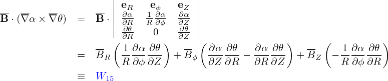 d𝜃 is simplified to q𝜃. Then ∇δ is written as
|
| (38) |
where the first term 𝜃∇q is a multi-valued function since 𝜃 is multi-valued.] For multi-valued functions, if a single branch is chosen, then there will be discontinuity at the the branch cut.
In numerically constructing the coordinates (ψ,𝜃,α), the principal value of 𝜃 is chosen in the range [−π : π] and the branch cut for 𝜃 is chosen on the high-field-side midplane. The toroidal shift δ = ∫ 0𝜃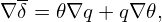 d𝜃 can be considered as a derived angle based on 𝜃 and thus its principal value and branch cut are determined by those of 𝜃. Specificly, the principal value of δ is in the range [−πq : πq] for up-down symmetrical equilibria and the branch cut is also on the high-field-side midplane.
The (ψ,𝜃,α) coordinates of a particle change continously when they are evolved by using Eqs. (13)-(15), during which 𝜃 can move beyond [−π,π]. When a particle’s 𝜃 moves beyong the range [−π : π], one or multiple ±2π shifts are imposed on 𝜃 until 𝜃 are within [−π : π]. Note that a cooresponding shift in α is needed to keep the particle at the same spatial location when doing the 𝜃 shift. This is because, although (ψ,𝜃,ϕ) and (ψ,𝜃 − 2π,ϕ) correspond to the same spatial location, points (ψ,𝜃,α) and (ψ,𝜃 − 2π,α) do not. Specificly, the usual toroidal angle ϕ of point (ψ,𝜃,α) is ϕ1 = α + ∫ 0𝜃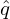 d𝜃 while ϕ of point (ψ,𝜃 − 2π,α) is ϕ2 = α + ∫ 0𝜃−2π d𝜃. The difference between ϕ1 and ϕ2 is ϕ2 − ϕ1 = −2πq. This indicates that, to keep the point at the same spatial location when shifting 𝜃 by −2π, α should be shifted by +2πq, i.e., the new coordinates of the point should be (ψ,𝜃 − 2π,α + 2πq). This process is illustrated in Fig. 1 and a typical evolution of (𝜃,α) involving shifting is shown in Fig. (2).
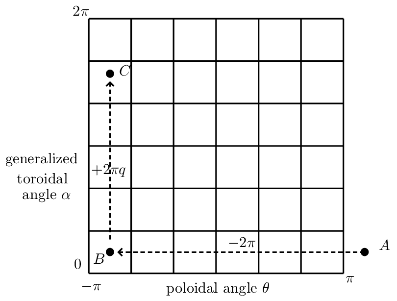
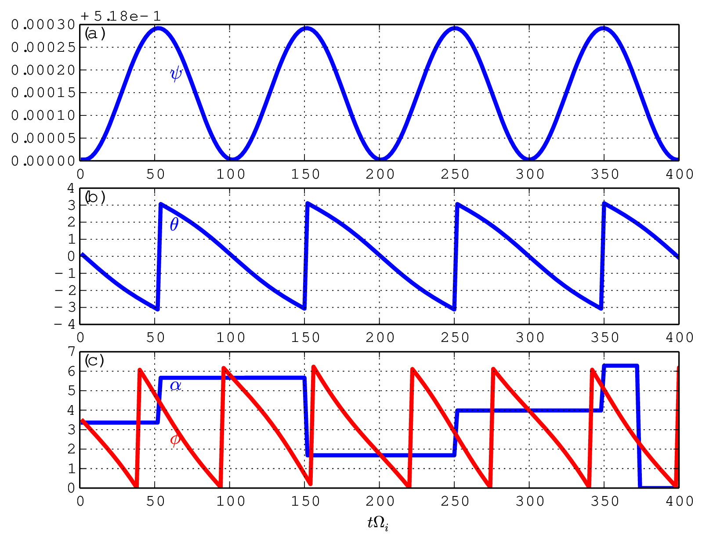
(When α of a particle moves beyong the range [0 : 2π], one or multiple ±2π shifts are imposed on α until α are within [0 : 2π]. Since, for fixed ψ and 𝜃, the generalized toroidal angle α is equivalent to the usual toroidal angle ϕ. No complication like the case of 𝜃 arises when doing the α shift.)
One way of avoiding the subtle (𝜃,α) shift problem is to evolve particles’ ϕ, instead of α. In this case, we have
To verify code implementation, two methods are used to compute the guiding-center orbits. The first method uses the cylindrical coordinates and then interpolate the orbits into magnetic coordinates using pre-computed mapping table between the cylindrical and magnetic coordinates. The second method directly uses the magnetic coordinates in pushing the orbits. The following figures compare the results obtained by these two methods, which indicates they agree with each other. This provdies confidence on the correctness of the numerical implementation.
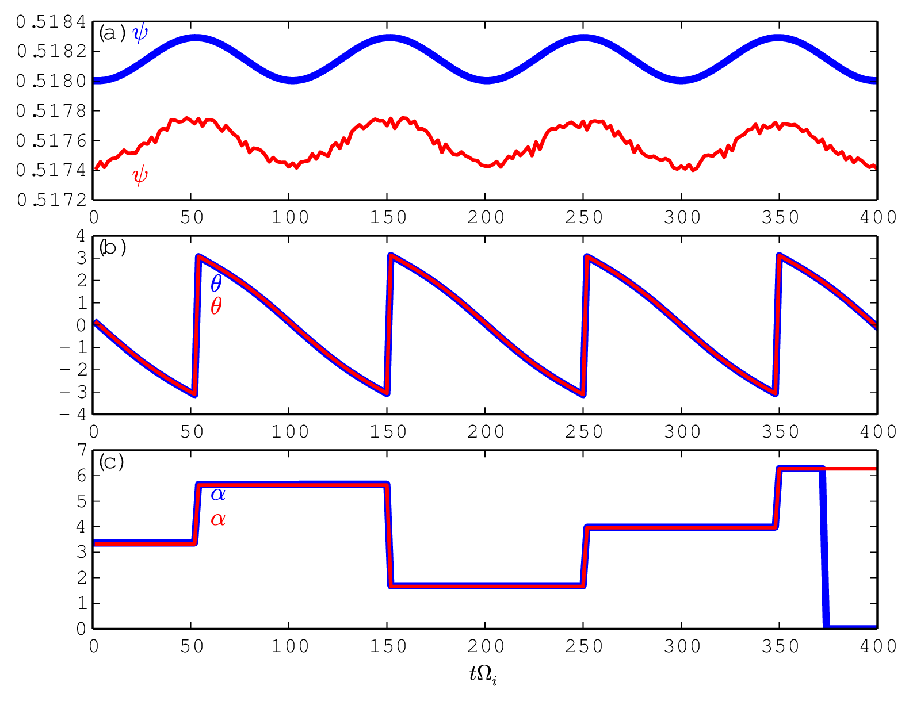
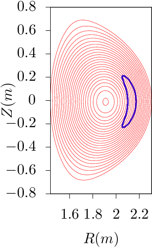 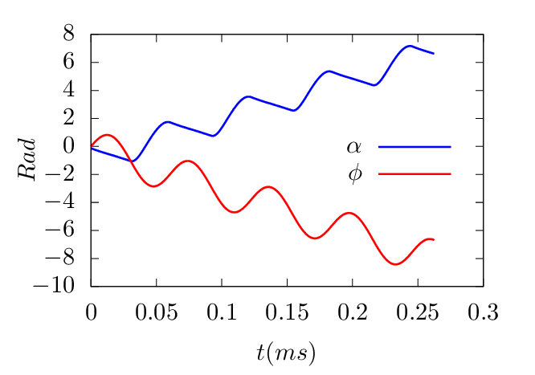
 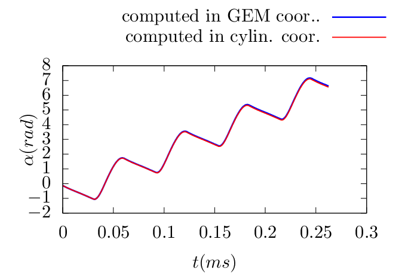
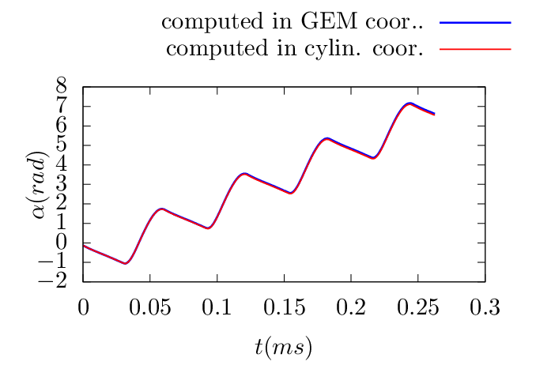
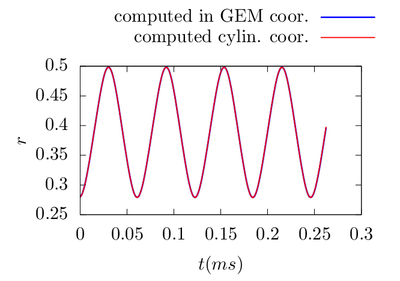 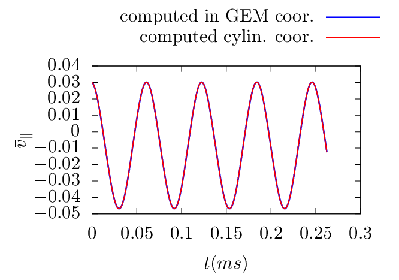